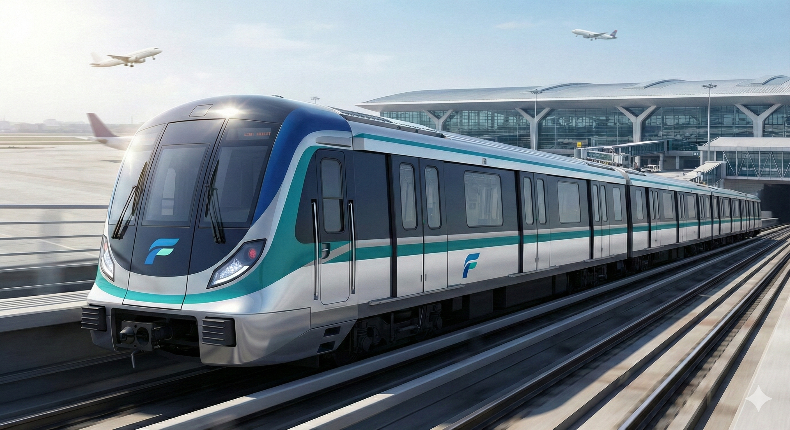
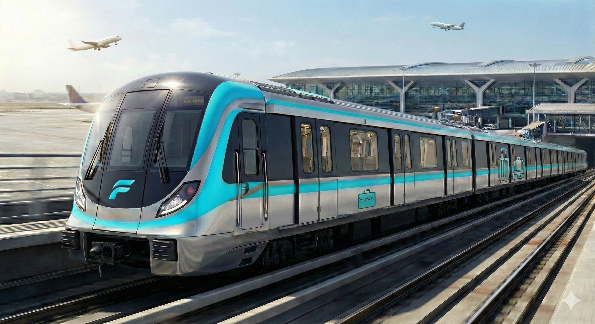

 E300 四輛編組 用途： 地鐵系統通勤列車 軌距： 1435 毫米；電力系統： 交流 25 kV 電車線 最高速度： 130 km/h；運轉最高速： 120 km/h 發車加速度： 2.5 km/h/s；平均減速度： 3.5 km/h/s 信號與保安： CBTC+ATP、TASC
 E300 六輛編組 用途： 往來機場的快速列車，設有商務及行李車廂 軌距： 1435 毫米；電力系統： 交流 25 kV 電車線 最高速度： 130 km/h；運轉最高速： 120 km/h 發車加速度： 2.5 km/h/s；平均減速度： 3.5 km/h/s 信號與保安： CBTC+ATP、TASC